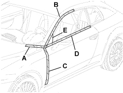

7005OA FRONT DOOR WIND NOISE LOCALISATION
- Path
- Test > 70 FITTINGS > 7005 PASSENGER COMPARTMENT FRONT SIDE DOORS > 7005O PASSENGER COMPARTMENT FRONT SIDE DOOR TESTS > 7005OA FRONT DOOR WIND NOISE LOCALISATION
- Kind
- test / check procedure
- Applies to
- all engines; all production periods
- Interactive page
- https://sloeber94.github.io/elrnDB-aBrrSpdr/en/#/946001139
Applies to: all engines; all production periods
Tape the various areas illustrated in the diagram using bodywork gummed paper.

Carry out a road test letting the vehicle gradually reach the speeds where the noise starts: if the wind noise persists, check for sealant between the wing and the pillar in the lower area.
Remove the gummed paper from area A and repeat the road test: if the wind noise persists, check the condition of the door housing seal in that area and make sure it adheres correctly to the bodyshell
Op. 7005A34 FRONT SIDE DOOR COMPARTMENT SEAL - R.R
Also check the condition of the bonne hinge buffer.
Remove the gummed paper from area B and repeat the road test: if the wind noise persists, check the condition of the door housing seal in that area and make sure it adheres correctly to the bodyshell
Op. 7005A34 FRONT SIDE DOOR COMPARTMENT SEAL - R.R
Also adjust the door hinges
Remove the shims from the upper hinges or add some to the lower hinges so that the door and the seal fit together better.
Remove the gummed paper from area C and repeat the road test, if the wind noise persists, check the condition of the door housing seal in that area and make sure it adheres to the bodyshell correctly.
Op. 7005A34 FRONT SIDE DOOR COMPARTMENT SEAL - R.R
Remove or add shims from/to the two hinges so that the door and the seal fit together better.
Remove the gummed paper from area D and repeat the road test: if the wind noise persists, check the condition of the glass scraper.
Op. 7005D26 FRONT SIDE DOOR DESCENDING WINDOW GLASS SCRAPER (OUTER) (ONE), LEFT OR RIGHT- R.R
Remove the gummed paper from the rear view mirror area E and repeat the road test: if the wind noise persists, check the condition of the mirror seal.
Topics linked from this page (4)
- 7005A14 FRONT SIDE DOOR - ADJUST CENTERING AND MOULDING - INCLUDES ADAPTATION OF HINGES AND SEALS ON DOOR COMPARTMENT
- 7005A34 FRONT SIDE DOOR COMPARTMENT SEAL - R.R
- 7005D26 FRONT SIDE DOOR DESCENDING WINDOW GLASS SCRAPER (OUTER) (ONE), LEFT OR RIGHT- R.R
- 7005R30 ELECTRICALLY CONTROLLED DOOR MIRROR (ONE) - R+R